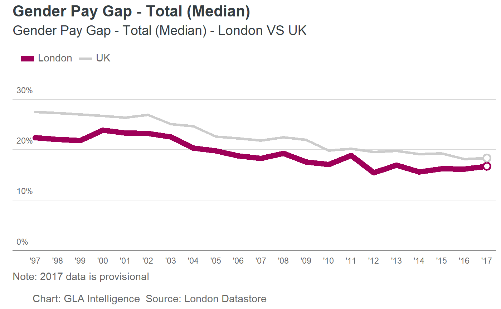

The package provides several wrappers and tools to use with ggplot2 to make graphics fit with the GLA style.
To install you’ll need an auth token from github
# To install from github use the devtools function:
# This will install all required dependencies
devtools::install_github("Greater-London-Authority/gglaplot", auth_token = token)library(ggplot2)
library(gglaplot)
library(scales)
library(lubridate)
pal <- gla_pal(gla_theme = 'light', palette_type = 'highlight', n = 2)
theme_set(theme_gla(gla_theme = 'light'))
ggplot(data = LDNUK, mapping = aes(x = Year, y = GPG, group = location,
colour = location)) +
ggla_line(aes(size = location)) +
scale_size_discrete(range = c(6 * mm_to_pt, 3 * mm_to_pt)) +
scale_colour_manual(values = pal) +
ggla_highlight(filter_type = 'end') +
ggla_axisat0() +
scale_y_continuous(expand = c(0,0), limits = c(0,32.5),
labels = dollar_format(prefix = '', suffix = '%')) +
scale_x_date(date_breaks = '1 year', date_labels = "'%y", expand = c(0,0),
limits = c(ymd('1996-01-02'),ymd('2017-06-01'))) +
labs(title = 'Gender Pay Gap - Total (Median)',
subtitle = 'Gender Pay Gap - Total (Median) - London VS UK',
caption = 'Note: 2017 data is provisional\n
Chart: GLA Intelligence Source: London Datastore')
For help with gglaplot itself, see the vignettes (run install_github with build_vignettes = TRUE to download them) and function documentation.
The BBC has a similar package for their house style which has some comprehensive help pages here.